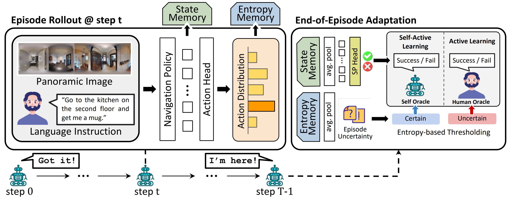

Abstract
TL;DR: We present ATENA, a test-time adaptation framework for vision-language navigation to improve navigation performance under distribution shift.
Vision-Language Navigation (VLN) policies trained on offline datasets often exhibit degraded task performance when deployed in unfamiliar navigation environments at test time, where agents are typically evaluated without access to external interaction or feedback. Entropy minimization has emerged as a practical solution for reducing prediction uncertainty at test time; however, it can suffer from accumulated errors, as agents may become overconfident in incorrect actions without sufficient contextual grounding. To tackle these challenges, we introduce ATENA (Active TEst-time Navigation Agent), a test-time active learning framework that enables a practical human-robot interaction via episodic feedback on uncertain navigation outcomes. In particular, ATENA learns to increase certainty in successful episodes and decrease it in failed ones, improving uncertainty calibration. Here, we propose mixture entropy optimization, where entropy is obtained from a combination of the action and pseudo-expert distributions―a hypothetical action distribution assuming the agent's selected action to be optimal―controlling both prediction confidence and action preference. In addition, we propose a self-active learning strategy that enables an agent to evaluate its navigation outcomes based on confident predictions. As a result, the agent stays actively engaged throughout all iterations, leading to well-grounded and adaptive decision-making. Extensive evaluations on challenging VLN benchmarks―REVERIE, R2R, and R2R-CE―demonstrate that ATENA successfully overcomes distributional shifts at test time, outperforming the compared baseline methods across various settings.
How does ATENA work?
Overview of the ATENA adaptation framework. At each navigation step, the agent stores state and entropy information in its memory. Once the episode ends, the stored entropy is used to determine the feedback source: human oracle for uncertain episodes, and self oracle for certain episodes. Self oracle utilizes a self-prediction head, trained during online test-time, enabling the agent to autonomously predict navigation success or failure by itself.
Mixture Entropy Optimization (MEO). (a) We design the Mixture Action Distribution by combining the model’s action distribution (yellow) with a pseudo-expert distribution (red). (b) MEO minimizes mixture entropy for successful episodes—reinforcing correct actions—and maximizes it for failed ones, discouraging incorrect behaviors.
Quantitative Results
Experimental result on REVERIE dataset. We evaluate ATENA on the REVERIE dataset by adapting three baseline models and comparing it with other test-time adaptation (TTA) methods. ATENA shows strong generalization to unseen environments, maintaining stable and reliable performance across both validation and test splits.
Qualitative Results
Before ATENA AdaptationAfter ATENA Adaptation
Top-Down Visualization
Navigation visualizations comparing the baseline VLN-DUET (Before ATENA Adaptation) and ours (After ATENA Adaptation).

This navigation visualization illustrates the changes in trajectory and action probabilities after ATENA adaptation. In the final step, ATENA successfully identifies the target object, demonstrating the effect of adaptation on navigation behavior. Moreover, you can see the top-down visualization showing trajectories before and after ATENA adaptation; additional examples are provided in the supplementary material.
BibTeX
@article{ko2025active,
title={Active Test-time Vision-Language Navigation},
author={Ko, Heeju and Kim, Sungjune and Oh, Gyeongrok and Yoon, Jeongyoon and Lee, Honglak and Jang, Sujin and Kim, Seungryong and Kim, Sangpil},
journal={arXiv preprint arXiv:2506.06630},
year={2025}
}